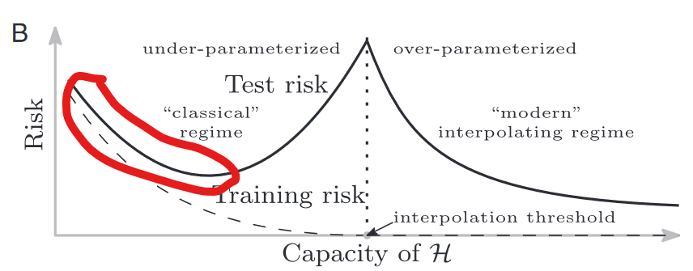
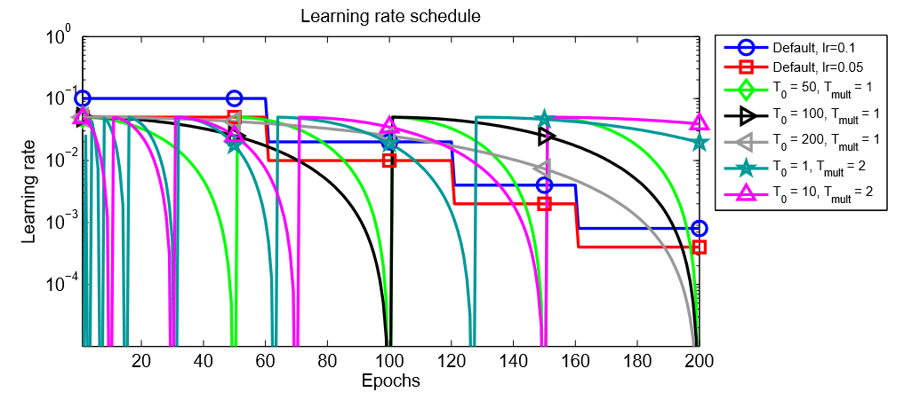

任务介绍#
这个作业要求训练一个能对11种食物进行分类的CNN。使用的数据集为food-11，数据集划分如下：
- 训练集：9866张带有label的图像
- 验证集：3430张带有label的图像
- 测试集：3347张不带有label的图像
完成训练后，将用测试集进行测试，输出含有3347张图片的预测label的csv文件，上传至kaggle后系统根据预测准确率自动评分。
Baseline如下：
- Simple : 0.50099
- Medium : 0.73207
- Strong : 0.81872
- Boss : 0.88446
训练结果#
| Times | Private Score | Public Score | Improvement（相比上一步） |
|---|---|---|---|
| 1 | 0.57063 | 0.55278 | 直接运行初始代码 |
| 2 | 0.71830 | 0.75298 | 数据增强、调整模型、调整loss function |
| 3 | 0.75757 | 0.78884 | 调整数据增强、手搓ResNet、loss function调参 |
| 4 | 0.77592 | 0.80378 | 减少ResNet层数，调整learning rate |
| 5 | 0.77251 | 0.80677 | 减少ResNet层数 |
| 6 | 0.82415 | 0.85358 | 增加ResNet层数 |
| 7 | 0.84208 | 0.87450 | 使用tta |
| Times | private score | public score | Improvement（相比前一步） |
|---|---|---|---|
| 1 | 0.57063 | 0.55278 | 直接运行初始代码 |
| 2 | 0.71830 | 0.75298 | 数据增强、调整模型、调整loss function |
| 3 | 0.75757 | 0.78884 | 调整数据增强、手搓ResNet、loss function调参 |
| 4 | 0.77592 | 0.80378 | 减少ResNet层数、调整learning rate |
| 5 | 0.77251 | 0.80677 | 减少ResNet层数 |
| 6 | 0.82415 | 0.85358 | 增加ResNet层数 |
| 7 | 0.84208 | 0.87450 | 使用tta |
训练方法#
Data augmentation#
在观察了部分数据之后，发现合理的图片增强方式包括但不限于
- 缩放裁剪
- 随机翻转
- 随机旋转
- 仿射变换
- 随机灰度化
最终代码如下所示：
1 | train_tfm = transforms.Compose([ |
模型设计#
模型使用的是ResNet，ResNet的搭建见：记手搓ResNet的经历 · 核子的Blog (hezj-opt.github.io)
在调整参数方面，最终调整预卷积层的通道数为32，全连接层的dropout为0.4，残差块采用两个3x3卷积层和shortcut path构成的残差块，最终使用通道数为64、128、256、512的残差块数量分别为1、2、1、1
1 | model = resnet(resblock_basic, 3, [64, 128, 256, 512], [1, 2, 1, 1], 11).to(device) |
在第4次训练中，使用过层数较少的网络（model = resnet(resblock_basic, 3, [64, 128, 256], [2, 2, 1], 11).to(device)），但是效果不佳，当时以为是over fitting，所以在第5次训练中把网络改得更简单了（model = resnet(resblock_basic, 3, [64, 128, 256], [2, 1, 1], 11).to(device)），修改后发现效果不仅没有显著提升，而且训练时长增加了非常多（第4次训练大致12小时，第5次训练花了将近16小时）。所以发现是模型欠拟合，决定增加模型复杂度，才在第6次训练后通过strong baseline。
鉴于几次调参后的效果，推断三次训练在下图中位置红色线框覆盖的区间内。
Loss function的选择与调参#
查阅资料发现，使用Focal loss会比Cross entropy有更快的收敛速度（参数γ导致），而且更适合各个标签的数据集不均的情况（参数α导致）。
下图显示了由于Focal loss的γ参数，Focal loss会收敛得更快

Focal loss中的α参数可以平衡训练集中各类图片数量的差异，比如在本次任务中，我先统计训练集中了11类食物的数量，然后对样本少的赋比较高的α值，样本多的食物赋比较低的α值。
1 | count = count / np.max(count) # count 为11类食物样本数的统计结果 |
Learning rate调整方案#
优化器选择Adam，初始学习率为0.0004，设置decay=1e-5
在学习率调整上，通过余弦退火调整学习率，退火周期为16，即每过16轮，学习率突然增大，然后再慢慢减小。如下图除了蓝线、红线以外的曲线所示。
这么做好处有二，一是可以加快收敛速度，二则是可以帮助“翻越” loss surface上的一些小山峰，从而更好地跳出“局部最小”（其实往往不是局部最小，但是有“跳出”的作用）找到全局最优解。
Test time augmentation#
训练时，我们对训练数据进行了增强，但是测试时用的就是正常的图片，但是我们想利用模型对增强的图片的识别效果辅助判断。所以可以让测试图片产生若干张增强的图片，依次求未增强图片和增强图片的预测向量，然后把向量相加后再求出最大值所在位置，就是最终预测结果。模型对同一个物体的原图和多张增强图像进行预测，一定程度上可以校正只对原图进行预测时的错误。

比如在本次hw中，我对每张测试图片产生五张增强图片，对六张图片进行预测，得到 preds列表，内含未增强图像的预测结果（preds[0]）和五张增强图像的预测结果。最终的预测结果为
1 | preds = 0.5* preds[0] + 0.1 * preds[1] + 0.1 * preds[2] + 0.1 * preds[3] + 0.1 * preds[4] + 0.1 * preds[5] |
进一步提升的可能#
数据增强可能可以尝试mix up#
mix up数据增强是一种进阶的数据增强，它可以使得模型在判断时不会那么绝对，可以减小过拟合。如果要实现mix up，要改写Dataset类，并且还需要写适用于mix up的loss function。

模型设计可能可以继续尝试#
过了strong baseline以后我没有继续调整模型，表格中最后一次产生的结果实际上用的是第6次训练得到的模型，只是在测试时采取tta。所以可能可以继续尝试加深模型，直至出现过拟合，再适当减小模型。
Learning rate调整方案有待提升#
我的实现中退火周期时固定的，但是看了原始论文后，发现设置合适的初始退火周期，然后在每个退火周期后，将退火周期增大一倍可能是个不错的策略。
Cross Validation + Ensemble#
简单地来说，Cross Validation + Ensemble是先把训练集和验证集重新进行划分，进行k种划分，训练出k个模型，最终用k个模型对图片进行多次预测。效仿tta的方式融合产生预测结果，此时不同的模型之间可以互相弥补缺陷，所以可以得到比较好的预测结果。
但是这玩意真的耗时间，第6次训练花费时间为8-9h，如果训练四个模型得35h左右……

其它值得记录的东西#
autodl tensorboard使用#
本次作业中我学习了autodl自带的tensorboard，发现操作十分简单。
-
开机后打开AutoPanel
-
用pip下载tensorboard
1
pip install tensorboard
-
新建一个writer
1
2from torch.utils.tensorboard import SummaryWriter
writer = SummaryWriter('/root/tf-logs') -
把想要看的东西放进tensorboard
1
2
3
4
5
6
7
8
9
10
11
12
13
14
15# loss 曲线
writer.add_scalars(main_tag='Loss',
tag_scalar_dict={'train': train_loss,
'valid': valid_loss},
global_step=epoch + 1)
# Accuarcy曲线
writer.add_scalars(main_tag='Accuracy',
tag_scalar_dict={'train': float(train_acc),
'valid': float(valid_acc)},
global_step=epoch + 1)
# 各层的参数的梯度绝对值曲线
for name, parms in model.named_parameters():
writer.add_scalar(f"Grad/{name}", torch.norm(parms.grad), epoch + 1)
layer的梯度变化#
下面两张图时预卷积层的weight的梯度模长变化和某个残差块中的一个卷积层的weight的梯度模长变化（经过平滑后的结果）。所以说可以发现哪怕训练到几乎停滞，其实并不是陷入局部最小值，甚至不在鞍点。所以之前推测学习率调整方案还可以进一步优化。


作者: 核子